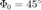

Virtual Sound Source Positioning Using Vector Base
The listener is situated equidistant to each speaker. If each speaker has a base angle of  The panning span is [-45 45] degrees from right to left speaker.
Contents
- Vector definition
- EXAMPLE with two simulated harmonic signals.
- We simulate a signal with two sources with natural guitar amplitudes
- We pan the signals to each side
- Pitch and complex amplitude estimation
- Angle Estimation
- Subtract estimate from source and iterate
- Finally we have estimated the two panning angles
phi0 = 45 * pi/180;
Seen from the listener a pan angle . is shifted to be the angle from the listeners position to the virtual sound positioning.
panAngle = 30 phi = panAngle * pi/180; theta = phi + phi0;
panAngle =
30
The trigonometric functions are most often used for panning gain since their power is unity as
g1 = cos(theta); g2 = sin(theta); g = [g1 g2]';
If the source is moving during playback the sound power can be set to a constant as  .
.
C = 1; gScaled = sqrt(C)*g/sum(g.^2)
gScaled =
0.2588
0.9659
Vector definition
The base Vectors are defined by unit-length vectors. and , which are pointing toward loudspeakers 1 and 2, respectively.
l1 = [-cos(phi0) sin(phi0)]'; l2 = [ cos(phi0) sin(phi0)]';
The unit-length vector is pointing toward the virtual sound source position The virtual source can be treated as a linear combination of loudspeaker vectors with gains g1 and g2 by multiplying the gain and the matrix
% $p^T = g^TL$
L = [l1 l2];
pT = gScaled'*L
pT =
0.5000 0.8660
Under these assumptions for a given panning angle is found as: $\Hat{\Theta} = \Arctan{p_1/p_2}
estimatedAngle = atan(pT(1)/pT(2))*180/pi
estimatedAngle = 30.0000
The described panning model is based on http://lib.tkk.fi/Diss/2001/isbn9512255324/article1.pdf by Ville Pulkki)
EXAMPLE with two simulated harmonic signals.
We simulate a signal with two sources with natural guitar amplitudes
clear all; trueAngle1 = 23.45 trueAngle2 = -32.46 fs = 44100; duration = 0.04; load('/Users/home/Documents/MATLAB/code/test_programs/source_separation/betaMean_Martin_40ms.mat'); load('/Users/home/Documents/MATLAB/code/test_programs/source_separation/a_hat_file_used_in_test_on_L.mat'); s500 = smc_sum_of_sines(smc_beta_model(500,0,18), abs(aHat(:,1,3)), 18, duration, fs ); s1500 = smc_sum_of_sines(smc_beta_model(700,0,7), abs(aHat(:,1,3)), 7, duration, fs );
trueAngle1 = 23.4500 trueAngle2 = -32.4600
We pan the signals to each side
[g1] = VBAP2(trueAngle1)
[g2] = VBAP2(trueAngle2)
s1 = s500*g1(1) + s1500*g2(1);
s2 = s500*g1(2) + s1500*g2(2);
s = [s1 s2];
figure;
subplot(211); smc_spectrogram(s1,fs); xlim([0.02 0.04]); ylim([0 6e3]);
subplot(212); smc_spectrogram(s2,fs); xlim([0.02 0.04]); ylim([0 6e3]);
g1 =
0.3673 0.9301
g2 =
0.9761 0.2171
Pitch and complex amplitude estimation
Transform to analytic
x1 = analytic(s1); fs2=fs/2; x2 = analytic(s2); fs2=fs/2;
estimate the first pitch with joint ANLS
[w0,L] = joint_anls(x1, [1e-3 0.25],2^12); pitchEstimateJointANLS = w0*fs/4/pi;
L =
6
w0 =
0.1994
Refine the pitch estimates
[f, X1] = smc_fft(s1,fs,2^22); [pitchEstimateL CL]= smc_ANLS(X1, pitchEstimateJointANLS*[0.97 1.03], L, fs); [f, X2] = smc_fft(s2,fs,2^22); [pitchEstimateR CR] = smc_ANLS(X2, pitchEstimateJointANLS*[0.93 1.03], L, fs); if CR>CL pitchEstimate = pitchEstimateR else pitchEstimate = pitchEstimateL end
pitchEstimate = 699.9572
Estimate complex amplitudes for each side from estimated pitch and model order using LS.
Z = smc_Z(pitchEstimate, length(x1), fs2, L); aLeft = inv(Z'*Z)*Z'*x1; aRight = inv(Z'*Z)*Z'*x2;
Angle Estimation
finally we can estimate the angle from the estimated energy contained in the amplitudes.
g1 = sum(abs(aLeft)); g2 = sum(abs(aRight)); phi0 = 45 * pi/180; l1 = [-cos(phi0) sin(phi0)]'; l2 = [ cos(phi0) sin(phi0)]'; L = [l1 l2]; g = [g1 g2]'; C = 1; gScaled = sqrt(C)*g/sqrt(g1^2+g2^2); pT = gScaled'*L; estimatedAngle1 = atan(pT(1)/pT(2))*180/pi;
Subtract estimate from source and iterate
We model the signals in real space time domain and subtract them from the given input.
x1Hat = Z*aLeft;
x2Hat = Z*aRight;
sL = ianalytic(x1-x1Hat);
sR = ianalytic(x2-x2Hat);
%
figure;
subplot(211); smc_spectrogram(sL,fs);xlim([0.02 0.04]); ylim([0 6e3]);
subplot(212); smc_spectrogram(sR,fs);xlim([0.02 0.04]); ylim([0 6e3]);
We estimate the next source with the same procedure.
[estimatedAngle2 , sL, sR] = smc_angle_estimator([sL sR],fs);
figure;
subplot(211); smc_spectrogram(sL,fs);xlim([0.02 0.04]); ylim([0 6e3]);
subplot(212); smc_spectrogram(sR,fs);xlim([0.02 0.04]); ylim([0 6e3]);
L =
10
w0 =
0.1427
g =
0.4113
1.0414
Finally we have estimated the two panning angles
error1 = abs(estimatedAngle1-trueAngle2) error2 = abs(estimatedAngle2-trueAngle1)
error1 =
0.1768
error2 =
0.0020